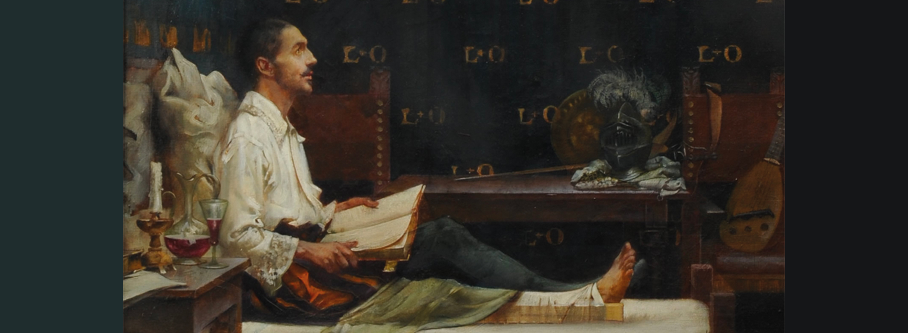

Hola Sophi,
Si estás aquí probablemente te encuentras frente a una decisión importante.
Quizás esperas que te diga qué hacer.
Pero Dios no me dio esa misión.
No te preocupes, te ofrezco enseñarte algo aún mejor.
Cómo buscar Su voluntad.
San Ignacio de Loyola
1491 — 1556
Imagina lo siguiente:
Un caballero.
Herido por una bala de cañón.
Meses inmóvil.
Sin poder hacer nada.
Aburrido.
Empieza a leer vidas de santos porque no había otra cosa.
Y descubre algo extraño.
Cuando imaginaba una vida de fama...
la alegría desaparecía rápidamente.
Cuando imaginaba seguir a Cristo...
la paz permanecía.
Ahí comenzó todo.
No porque Dios le hablara con una voz.
Sino porque aprendió a escuchar
los movimientos de su corazón.
¿Cómo te suena?
Te invito a que con paciencia y total confianza
respondas honestamente las siguientes preguntas.
Antes de continuar...
quiero pedirte algo.
Ve por un lápiz y una hoja.
No escribas tus respuestas aquí.
Escríbelas con tu propia mano.
Este encuentro no fue hecho para responder rápido,
sino para pensar despacio.
Yo te espero.

San Ignacio de Loyola
San Ignacio descubrió que Dios muchas veces guía el corazón sin obligarlo.
Por eso enseñó que las decisiones importantes no deben tomarse dominados por el miedo, la ira o la desesperación.
Antes de decidir...
reza. Busca consejo. Examina tus intenciones.Y recuerda que la voluntad de Dios nunca contradice el Evangelio.
Este encuentro no puede terminar delante de una pantalla.
Te recomiendo que antes de tomar una decisión seria vayas frente al Santísimo y pienses bien sobre cuál es la voluntad de Dios para ti respecto a dicha circunstancia.